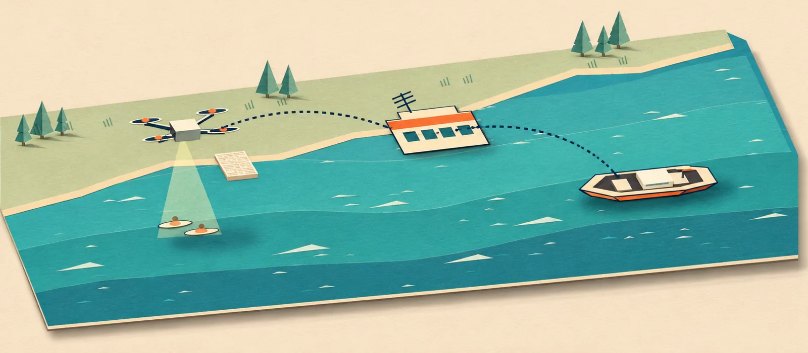

Which sightings should the crew check first?
And when the crew says “I see them,” can the operator see who they mean?
A trained detector flags possible swimmers in every second of drone video. Muse Ember, an AI model from Meta, takes a second look at each flagged spot. The drone operator gets a short ranked list of sightings to send to the boat crew, called handoffs. The crew marks who they see and sends it back.

“Honestly, we didn’t know if the boats knew.”